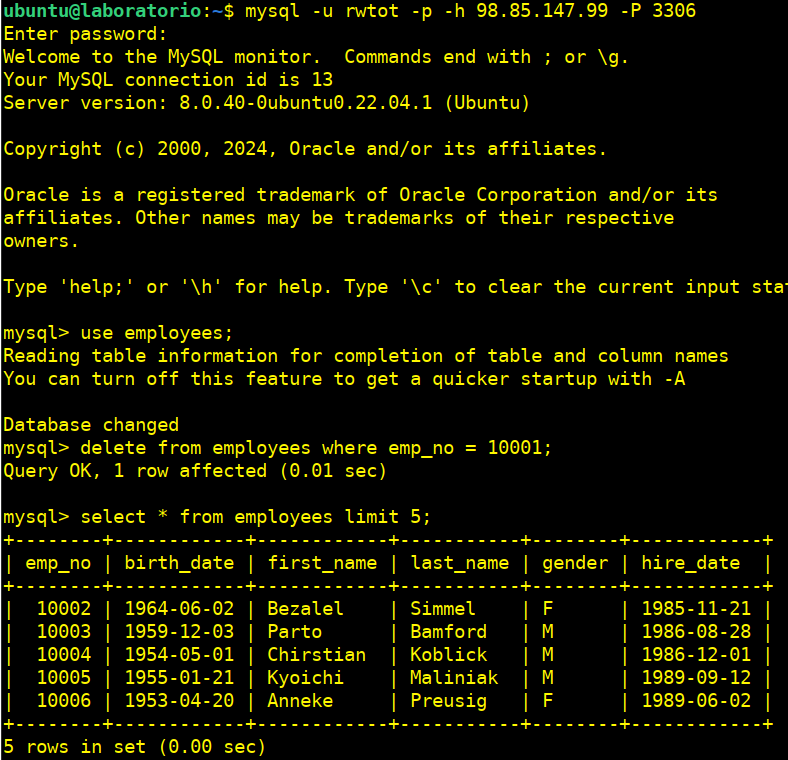

Práctica tema 4. Usuarios, permisos y roles
Instalación
- Configuraremos una MV en AWS una con la instalación de mysql-server con la BBDD de tatoo (master).
- Otra MV con mysql-client (laboratorio)
MV-AWS para la BBDD

MV-laboratorio

Para permitir que MySQL acepte conexiones desde cualquier IP, necesitamos modificar el archivo de configuración de MySQL, específicamente el parámetro bind-address
1.- Accedemos al Archivo de Configuración de Mysql: /etc/mysql/mysql.conf.d/mysqld.cnf
sudo nano /etc/mysql/mysql.conf.d/mysqld.cnf
2.- Modificamos el parámetro bind-address
De bind-address = 127.0.0.1
A bind-address = 0.0.0.0

sudo systemctl restart mysql.service
Copiamos nuestra BBDD
Desde nuestro terminal de la MV de AWS donde tenemos instalado mysql:
git clone https://github.com/datacharmer/test_db.git
La base de datos de empleados es compatible con varios motores de almacenamiento diferentes, con el motor InnoDB habilitado de forma predeterminada. Editamos el employees.sql archivo y ajustaremos los comentarios para elegir un motor de almacenamiento diferente:
cd test_db
sudo nano employes.sql

Pero al final no guardamos esta configuración solo la vemos para saber como cambiarla.
Para importar los datos a su instancia de MySQL, cargaremos los datos a través de la herramienta de línea de comandos mysql:
sudo mysql -t < employees.sql

Validación de los datos de los empleados
Puede validar los datos del empleado mediante dos métodos md5 y sha. Se proporcionan dos scripts SQL para este propósito test_employees_sha.sql y test_employees_md5.sql. Para ejecutar las pruebas, usaremos mysql:
sudo time mysql -t < test_employees_sha.sql
sudo time mysql -t < test_employees_md5.sql

Creación de un usuario administrador
1.- Creamos un usuario que tenga todos los permisos sobre esta base de datos y además tenga permiso para otorgar permiso a otros usuarios. Utiliza este usuario para realizar los puntos siguientes.
sudo mysql -u root
CREATE USER 'Sauron'@'localhost' IDENTIFIED BY 'Root_pass1';
GRANT ALL PRIVILEGES ON *.* TO 'Sauron'@'localhost' WITH GRANT OPTION;
GRANT CREATE USER ON *.* TO 'Sauron'@'localhost';
Comprobamos
select user, host from mysql.user;

mysql -u Sauron -p
Creación de dos usuarios
2.- Creamos dos usuarios que tenga acceso de lectura a todas las tablas de la base de datos. Uno podrá acceder desde cualquier punto y el segundo solo podrá acceder desde la IP del cliente del laboratorio.
CREATE USER 'totread'@'%' IDENTIFIED BY 'totread';
GRANT SELECT ON employees.* TO 'totread'@'%';
CREATE USER 'ipread'@'98.85.180.194' IDENTIFIED BY 'ipread';
GRANT SELECT ON employees.* TO 'ipread'@'98.85.180.194';
Verificamos los privilegios de los usuarios:
SHOW GRANTS FOR 'totread'@'%';
SHOW GRANTS FOR 'ipread'@'98.85.180.194';

3.- Creamos dos usuario que tenga acceso de lectura/escrituta a todas las tablas de la base de datos. Igual que antes uno solo accederá desde el cliente del laboratorio y el segundo desde cualquier punto.
create user 'rwtot'@'%' identified by 'rwtot';
GRANT SELECT, INSERT, UPDATE, DELETE ON employees.* TO 'rwtot'@'%';
create user 'rwip'@'98.85.180.194' identified by 'rwip';
GRANT SELECT, INSERT, UPDATE, DELETE ON employees.* TO 'rwip'@'98.85.180.194';
Verificamos los privilegios de los usuarios.
SHOW GRANTS FOR 'rwtot'@'%';
SHOW GRANTS FOR 'rwip'@'98.85.180.194';
Comprobamos los usuarios creados.
select user, host from mysql.user;
4.- Realizamos las pruebas necesarias para ver que estos usuarios acceden sólo desde donde tienen permiso y que pueden o no pueden modificar la información en función de los permisos otorgados.
Desde el servidor-laboratorio nos conectamos al servidor de la BBDD employees, seleccionamos esta y dentro 5 empleados e intentamos borrar uno.
mysql -u totread -p -h 98.85.147.99 -P 3306
use employees;
select * from employees limit 5;
delete from employees where emp_no = 10001;

No podemos borrar el registro ya que el usuario totread solo tiene permisos de lectura.
Desde el equipo anfitrión nos intentamos conectar con el usuario que tiene permisos de lectura/escritura desde un IP (host) que no es la que tiene establecida para la conexión.
mysql -u rwip -p -h 98.85.147.99 -P 3306

No podemos autentificar-nos ya que no estamos en la IP que se nos pide en la configuración del usuario para conectarnos.
Vamos a conectarnos con el usuario que si tiene permisos de lectura/escritura:

Si que hemos podido borrar ya que el usuario user-rw1 si tiene permisos de lectura y escritura, además de poderse conectar desde cualquier punto.
5.- Eliminamos las cuentas creadas en los puntos 2 y 3.
mysql -u Sauron -p
drop user 'totread'@'%';
drop user 'rwtot'@'%';
drop user 'ipread'@'98.85.180.194';
drop user 'rwip'@'98.85.180.194';
select user, host from mysql.user;
Creación de roles
1.- Creamos un rol que otorgue permisos de lectura sobre todas las tablas de la base de datos.
create role leo_rol;
grant select on employees.* to leo_rol;
2- .Creamos un rol que otorgue permisos de escritura sobre todos las tablas de la base de datos.
create role write_rol;
grant insert, update, delete on employees.* to write_rol;
3.- Creamos un usuario y le asignamos el rol de lectura.
create user 'eduleo'@'%' identified by 'eduleo';
grant leo_rol to 'eduleo'@'%';

4.- Creamos un usuario y le asignamos el rol de escritura.
create user 'escribano'@'%' identified by 'escribano';
grant write_rol to 'escribano'@'%';

5.- Creamos un tercer usuario y le asignamos los dos roles.
create user 'dosroles'@'%' identified by 'dosroles';
grant leo_rol to 'dosroles'@'%';
grant write_rol to 'dosroles'@'%';

El comando SET DEFAULT ROLE ALL TO 'leo_rol'@'%', 'write_rol'@'%'; establece los roles predeterminados que se asignarán automáticamente a un usuario cuando inicie sesión en MySQL.
set default role all to 'leo_rol'@'%', 'write_rol'@'%';
6.- Hacemos las pruebas pertinentes para ver los roles que tiene cada usuario.
select user, host from mysql.user;

7.- Hacemos las pruebas pertinentes para ver que sólo pueden realizar aquello para los que tienen los roles, desde el server-laboratorio.
Accedemos a la BBDD con el usuario que tiene asignado el rol de lectura:
mysql -u eduleo -p -h 98.85.147.99 -P 3306
Activamos el Rol de Lectura.
El rol no esté activo para nuestra sesión actual del usuario. Lo activamos manualmente:
set role 'leo_rol';
Seleccionamos nuestra BBDD employees y listamos 5 empleados y al intentar borrar uno de ellos nos lo va a denegar ya que el usuario eduleo solo tiene permiso de lectura.
use employees;
select * from employees limit 5;
delete from employees where emp_no = 10002;

Ahora accedemos a la BBDD con el usuario que tiene asignado el rol de escritura.
Activamos el Rol de Escritura.
El rol no esté activo para nuestra sesión actual del usuario. Lo activamos manualmente:
set role 'write_rol';
Seleccionamos nuestra BBDD employees e intentamos listar 5 empleados, pero nos lo va a denegar ya que el usuario escribano solo tiene asignados el rol de escritura y no de lectura, por lo que no podemos acceder.
use employees;
select * from employees limit 5;

Ahora accedemos a la BBDD con el usuario que tiene asignado los roles lectura/escritura.
mysql -u dosroles -p -h 98.85.147.99 -P 3306
Activamos los Roles de lectura/escritura.
Los roles no estarán activos para nuestra sesión actual del usuario. Los activamos manualmente:
set role 'leo_rol';
set role 'write_rol';
Seleccionamos nuestra BBDD employees e intentamos listar 5 empleados, pero nos lo impide a pesar de tener asignado los dos roles de lectura y escritura, por lo que vamos a generar un nuevo rol readwr_rolque integre todos los permisos para así a ver si podemos arreglar esta situación.
Desde la terminal donde tenemos la BBDD.
Accedemos con el usuario administrador Sauron:
mysql -u Sauron -p
Creamos el nuevo rol readwr-rol, le damos los permisos de lectura/escritura en un solo comando y se lo asignamos al usuario dosroles:
create role readwr_rol;
grant select, insert, update, delete on employees.* to readwr_rol;
grant readwr_rol to 'dosroles'@'%';
Desde la terminal de nuestro server laboratorio accedemos con el usuario dosroles
mysql -u dosroles -p -h 98.85.147.99 -P 3306

Como el rol no estará activo para nuestra sesión actual del usuario. Lo activamos manualmente:
set role 'readwr_rol';

Seleccionamos nuestra BBDD employees y listamos 5 empleados, y vemos que podemos borrar un usuario ya que además de poder acceder con el rol que contiene select también podemos borrar ya que el mismo rol contiene delete.
use employess;
select * from employees limit 5;
delete from employees where emp_no = 10002;
select * from employees limit 5;

Conclusiones
1.- Como administrador de base de datos:
-
¿Usarías roles a la hora de administrar un servidor de base de datos? Si, evitamos otorgar privilegios individualmente a posiblemente muchas cuentas de usuario y creando roles con nombres para los conjuntos de privilegios requeridos nos facilitará la concesión de los privilegios necesarios a las cuentas de usuario mediante la concesión de los roles adecuados.
-
¿Qué ventajas ves al uso de roles?
- Gestionamos los permisos simplificadamente.
- Controlamos el establecimiento de permisos para mejorar la seguridad.
- La escalabilidad no nos afectaría ya que los roles asignados en conjunto controlarían ese inconveniente.
- Mantenimiento más simplificado, al realizar los cambios sobre los roles y no sobre los permisos.